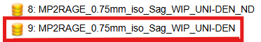

Introduction
Welcome to the 3D printing brain project! In this guide, you will find detailed instructions to print a brain model successfully.
Step 1: Downloading from DARIS
- Use the crosshairs found under view
- Adjust the saturation
- Make sure you don't include the participants eyes especially in the axial adn coronal planes
Login to Daris Using your Unimelb credentials. Your access will have to be approved prior to logon
Daris is where teh radiographers upload all images collected from each scanNaviagte to the neuropaths folder (on the left hand side)
If you have access to multiple projects all will be listed hereSelect the correct participant based upon their DARIS ID
These can be found on the running participant tracker on the neuropaths drive Particiapnts that have been scanned multiple times will have multiple projects listed (each timepoint)Select the project you are after, it will open up all the scans collected
The file we are looking for is listed as MP2RAGE (we will be using the file wihtout distortion correction)

If we have had to run multiple structural scans becuase the participant moved all structurals should be uploaded to DARIS. Scroll down as repeat structurals often occur towards the end.
If there are multiple structurals the final one is often the clearest, but dont always assume this. Open the files and compare them to see whcih one is clearer
Downloading images to be sent
click on teh non distortion corrected file
Then click Dicom(papaya view)
3 views will be shown, we send all 3 views
You can play around until you have the clearest of all 3 views.
Note: for teh sagitaal view you want to ensure that you are on one of the the sides of the membrane that spilts the two hemispheresTIPS TO GET THE CLEAREST IMAGES
Once you have clear images they can be screen snipped and saved as the participant ID followed by A, B, C for each view
Images are tehn ready to be sent off to the particpant
Please remeber to also upload the images to the google drive under Brain Pics
Niffty to STL file
Step-by-Step Instructions
- Prepare your 3D printer by calibrating it.
- Load the filament into the printer.
- Upload the brain model file to the printer.
- Print the model and wait for the process to complete.
- Assemble the parts carefully after printing.
Image Gallery
Check out some images of the printed models.